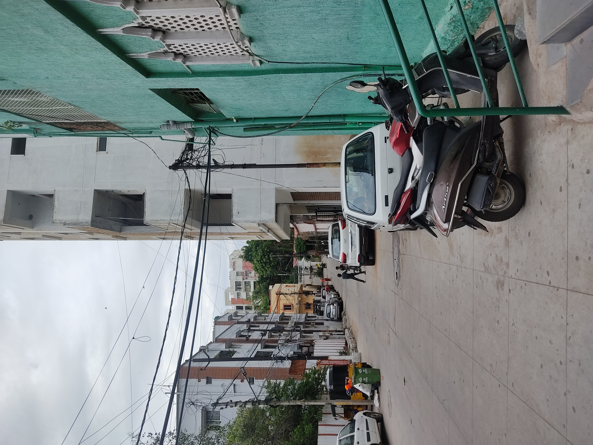

NODE // depth=4 // terminal
orbit map // the building // same perimeter
The thing that stopped me when I reviewed the photographs is the sightline. From the corner of that building, standing at the entrance in the position the clipboard man stands during the perimeter walk I have documented, you can see into the lower lot. Not just the lower lot of that building. The lower lot of mine. I measured the angle against the satellite image and the sightline is unobstructed for the relevant distance. He was not walking the perimeter of one property. He was walking the perimeter of both at once, using the position of the first to observe the second.
I have been watching one end of a surveillance corridor. The building I found is the other end. The name on the dissolved registration is whoever set up the corridor, or whoever owns whatever is on the other end of it. I do not know which. What I know is that the diagram in the glove box — bilateral, escalating, a structure that reads the same forward and backward — is a map of something with two reference points. I have both points now.
I am not documenting the specifics of the sightline here. Not the distances, not the degrees. Not because I do not have them — I have them — but because this documentation is itself visible, and there is no value in making it easy to understand what I have figured out before I decide what to do with it. The sightline exists. I have confirmed it. The thread ends here, not because there is nothing more, but because what comes next is not documentation.
